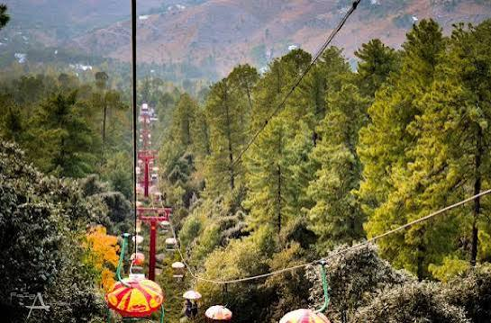
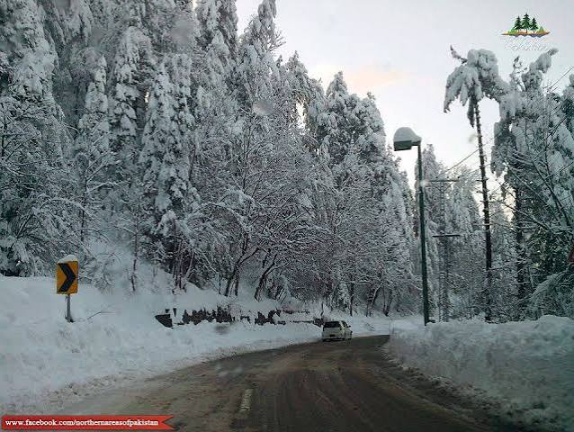
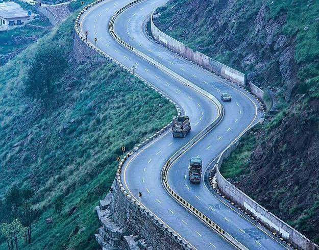
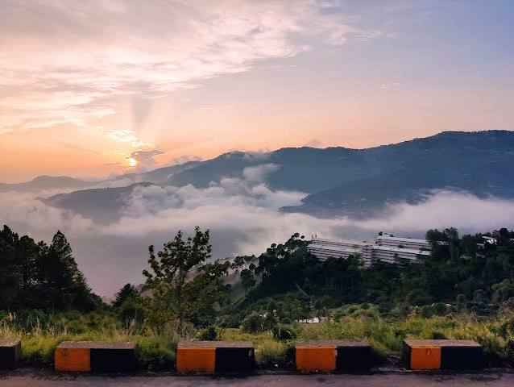

Murree Photo Gallery
A visual showcase of Murree's misty valleys, snow-covered pines, chairlifts, and scenic viewpoints.







A visual showcase of Murree's misty valleys, snow-covered pines, chairlifts, and scenic viewpoints.



